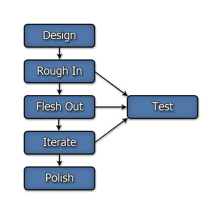

Scaleform GFx Workflow

Planning
One of the most difficult aspects of development is estimating how much time a particular task will take. Scaleform introduces a new toolset into the mix - Flash - which can make this even more difficult. Keep in mind that unless your UI artist(s) already know or are at least familiar with Flash and its interface, there may be some growing pains in the beginning of the UI creation process. For instance, with Gears of War3, scenes might take anywhere up to two weeks to complete on the Flash side. however, nearer to the end of the development process, the artists were cranking out scenes in closer to two days. This is because they had to learn Flash, and also there was a learning process of how to best set up scenes for use with Scaleform and UE3. Once this learning process was out of the way, things flowed much more smoothly and quickly.
The scripting side of creating Scaleform UIs is fairly trivial in general. There was no great learning curve, but depending on how quickly the artists can pump out scenes on the Flash side, scripting can quickly become the bottleneck in the pipeline.
Design
Have a solid design in mind before starting! One way to waste time is to finish a UI only to have to scrap it and start over or make sweeping changes because there was no clear direction or design from the beginning. Small iterations near the end will not cost nearly as much in terms of man-hours lost or headaches gained as a complete redesign.
Rough In
A good way to get started for the first few scenes is to actually make an ugly version of the scene yourself. Make the roughed in classes, add the clips to the movie with the right bagging, add simple roughed out animations, etc. This way, you can make sure it is laid out the way it needs to be for the script to work. Even if you only do this for test scenes, it is a great exercise. Debugging Flash is black magic that can only be learned from doing. Seeing how even simple things can fail is the best way to do this.
Flesh out
Once the rough scene is created and functional, the artist can go in and put his touches on the scene to make it look good. Having a scene already set up to start from should give the artist a better understanding of the proper scene hierarchy needed to make things work and be able to use that to create their own scenes from scratch later on; saving time for the scripters as they become the bottleneck in the development process. During this process, the artist will no doubt break things - it will undoubtedly be necessary in some cases to create the look and experience the design calls for. This generally only means small fixes on the scripting side and, over time, the artist will learn what breaks things and how to avoid them. At the same time, scripters will learn what changes cause things to break in what ways and be able to use that to diagnose problems down the line.
Iterate
Requirements change, designs change, systems change; it is a necessary evil in game development. Iteration is going to happen and you should be prepared for it. Hopefully, with a solid design agreed on at the beginning, the changes will only be minimal. This isn't always the case, though. There will be complete redesigns and entire scenes scrapped, but the goal is that it results in a better experience for the player so it should be worth it.
Polish
After things are working and looking pretty, you may want to do a polish pass to make sure the animations, the graphics, etc. are just right. Be careful! It is easy to break something without even trying. Is the benefit of the change you are making really worth any potential problems? If yes, then go for it. if not, leave it alone!
Test, Test, Test
Test, and test often. Test in the GFx player, but also test everything in the game. The GFx player gives a good representation of how the scene will look and behave, but there is no substitute for the real thing. The littlest changes can potentially break things that seem completely unrelated and the longer you go between testing, the harder it is to track down which change caused which problem.
When in doubt, test.
Important!
You are viewing documentation for the Unreal Development Kit (UDK).
If you are looking for the Unreal Engine 4 documentation, please visit the Unreal Engine 4 Documentation site.